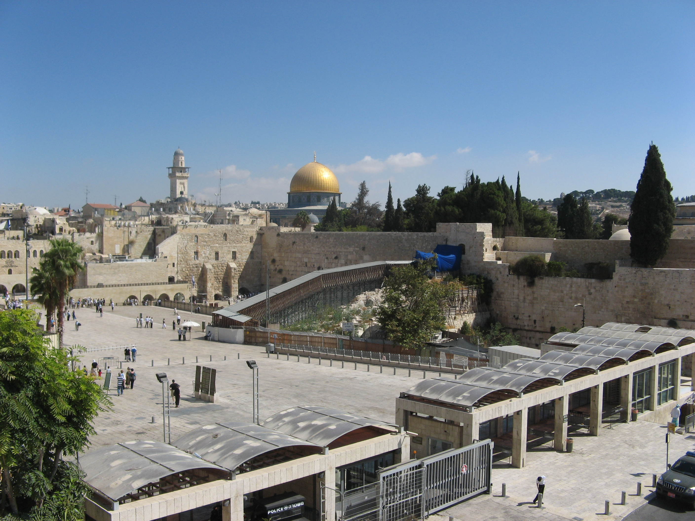

Western Wall

- Find Name
- Western Wall
- Historical Period
- Herodian Period
- Artifact Date
- 1st century BC (built under Herod the Great)
- Date Discovered
- Standing monument (excavated sections from 1968)
- Discovery Location
- Jerusalem, Israel
- Current Location
- In situ, Jerusalem Old City
- Timeline Era
- Return and Second Temple
- Description
- The western retaining wall of the Temple Mount platform, built of massive Herodian ashlars and still standing in Jerusalem. It held up the platform on which Herod's Temple stood; it is not itself a wall of the Temple building. Excavated sections and tunnels continue to reveal its full length beneath the present city.
- Biblical Significance
- This is the closest standing stone to the Temple Jesus taught in. When the disciples marvelled at the Temple's great stones, they were looking at masonry of this scale — and when Jesus said not one stone would be left on another, the platform wall remained as a witness that the building above it was indeed thrown down.
- Evidence Class
- Contextual
- Interpretations
- Scholars agree the wall is Herod's retaining wall for the Temple platform; it is sometimes mistaken for the Temple itself, which it is not — the Temple building stood on the platform above.
- Scripture Illuminated
- Related Books
- Related Places
- Alternative Names
- Kotel; Wailing Wall
Awaiting Review Not yet checked against scholarly sources. Treat its claims as provisional until this entry is reviewed. About verification
Last reviewed: not yet reviewed